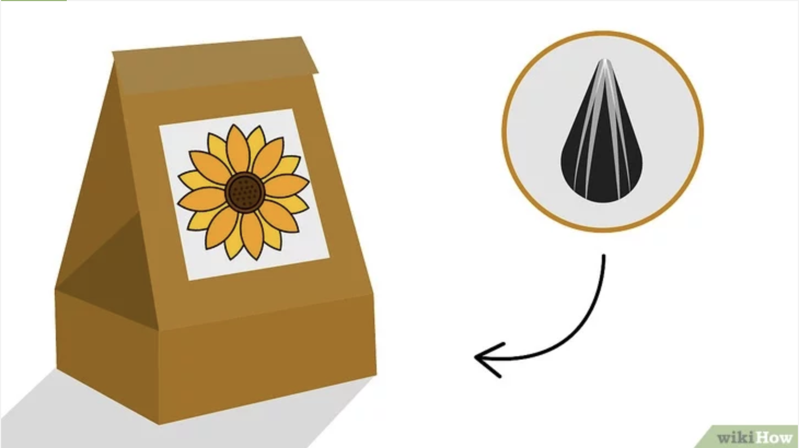

Objective 1 - Choose sunflowers and plant containers
# 2 SKILLS FOR YOU #
- Purchasing channel - You can buy seeds at your local nursery or garden centre or online.
- Pick the right size container - The size of the container depends on the height of the sunflowers you want to plant, and how many flowers you want in each container. Generally speaking, most dwarf sunflowers can be grown in POTS measuring 30-40 cm in diameter.
